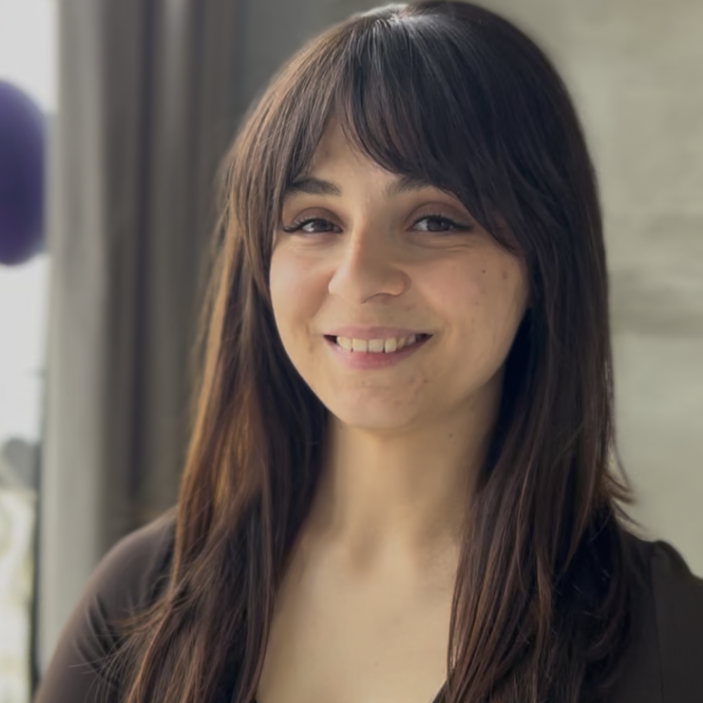

Body & Mind
Dobre na początek
BODYART
Dla osób, które chcą, żeby ciało naprawdę popracowało, a głowa wyszła z zajęć spokojniejsza.
umiarkowana 60 min
Kiedy
śr 20:00pt 19:00
 Zuzanna Listkiewicz
Zuzanna Listkiewicz
 Ela Pniaczek
Ela Pniaczek
Więcej o zajęciach
Praktyka, która łączy siłę ciała z oddechem i świadomym ruchem. Czerpie z jogi, Tai Chi, Qi Gongu, tańca i ćwiczeń wzmacniających, a ruch prowadzony jest w rytmie pięciu żywiołów.
Co Ci dadzą regularne zajęcia
- wzmocnisz całe ciało i mięśnie głębokie
- poprawisz postawę, stabilizację i koordynację
- rozluźnisz nagromadzone napięcia
- nauczysz się świadomie pracować z oddechem
Strój: wygodny strój sportowy, ćwiczenia boso
Fitness
Dobre na początek
Barre Pilates
Dla osób, które chcą wzmocnić i wymodelować ciało – nie potrzebujesz doświadczenia baletowego ani tanecznego.
dynamiczna 50 min
Kiedy
śr 18:00sb 10:40
 Paulina Szuba-Kolaska
Paulina Szuba-Kolaska
Więcej o zajęciach
Pilates, fitness i balet przy drążku: precyzyjne ruchy i pulsowania w rytm muzyki. Pracuje całe ciało – od ramion, przez brzuch i mięśnie głębokie, po nogi i pośladki.
Co Ci dadzą regularne zajęcia
- wzmocnisz i wymodelujesz całe ciało
- wzmocnisz brzuch i mięśnie głębokie
- poprawisz postawę, równowagę i stabilizację
- poczujesz więcej lekkości i swobody w ciele
Strój: wygodny strój sportowy, ćwiczenia boso
Body & Mind
Dobre na początek
Sinya Pilates
Dla osób, które chcą wzmocnić ciało spokojnie i bezpiecznie – liczy się jakość ruchu, nie tempo.
umiarkowana 50 min
Kiedy
śr 19:00sb 09:30
Paulina Szuba-Kolaska
Więcej o zajęciach
Spokojna praktyka ruchu, podczas której wzmocnisz całe ciało, poprawisz mobilność i wyciszysz układ nerwowy dzięki świadomemu oddechowi i uważności.
Co Ci dadzą regularne zajęcia
- wzmocnisz mięśnie głębokie oraz całe ciało
- poprawisz postawę, równowagę i stabilizację
- zwiększysz mobilność oraz elastyczność
- nauczysz się świadomego oddechu
Strój: wygodny strój sportowy, ćwiczenia boso
Body & Mind
Dobre na początek
Pilates Zdrowy Kręgosłup
Szczególnie dla kobiet w ciąży, mam z maluszkami (do ok. 2. roku życia) i osób wracających do ruchu po przerwie.
łagodna 50 min
Kiedy
cz 10:30
Paulina Szuba-Kolaska
Więcej o zajęciach
Spokojna praktyka skoncentrowana na zdrowiu kręgosłupa, rozluźnieniu napięć i świadomym wzmacnianiu ciała. Bez pośpiechu i presji.
Co Ci dadzą regularne zajęcia
- rozluźnisz napięcia w odcinku szyjnym, piersiowym i lędźwiowym
- zwiększysz ruchomość bioder i barków
- wzmocnisz mięśnie głębokie i dna miednicy
- poprawisz postawę ciała
Strój: wygodny strój sportowy, ćwiczenia boso
Zajęcia są częścią programu Mama w Ciele – w pakiecie eBook dla kobiet w ciąży i kontakt z instruktorkami na WhatsAppie.
Fitness
Dobre na początek
Trening Prozdrowotny
Szczególnie dla kobiet w ciąży, mam z maluszkami (do ok. 2. roku życia) i osób wracających do formy po dłuższej przerwie.
łagodna 50 min
Kiedy
wt 10:30

Karina Wronowicz
Więcej o zajęciach
Zajęcia, które pomagają wzmocnić ciało, odzyskać sprawność i poczuć się pewniej w codziennym ruchu. Dbamy o kręgosłup, mięśnie dna miednicy i mobilność.
Co Ci dadzą regularne zajęcia
- wzmocnisz ciało i poprawisz postawę
- zadbasz o mięśnie dna miednicy
- zmniejszysz napięcia i dyskomfort w plecach
- bezpiecznie wrócisz do regularnego ruchu
Strój: wygodny strój sportowy, obuwie dowolnie
Zajęcia są częścią programu Mama w Ciele – w pakiecie eBook dla kobiet w ciąży i kontakt z instruktorkami na WhatsAppie.
Body & Mind
Flow & Flex
Dla osób, które chcą poprawić elastyczność i otworzyć biodra – bez szarpania i presji.
umiarkowana 50 min
Kiedy
pn 20:30
 Patrycja Krause
Patrycja Krause
Więcej o zajęciach
Ruch płynie w rytm muzyki: sekwencje jednocześnie wzmacniają i rozciągają. Napięcia odpuszczają, a poruszanie się staje się swobodniejsze i lżejsze.
Co Ci dadzą regularne zajęcia
- zwiększysz elastyczność i zakresy ruchu
- otworzysz biodra i poczujesz w nich więcej swobody
- rozluźnisz napięte i przeciążone partie ciała
- poczujesz większą lekkość w ruchu
Strój: wygodny strój sportowy, ćwiczenia boso
Body & Mind
Dobre na początek
Yoga Kobieca
Dla kobiet, które potrzebują chwili dla siebie – ruchu, wyciszenia i kontaktu z własnym ciałem.
łagodna 60 min
Kiedy
wt 17:20cz 17:20
Zuzanna Listkiewicz
Więcej o zajęciach
Ruch przeplata się z wyciszeniem i uważnością. Praktyce towarzyszy aromaterapia z naturalnymi olejkami eterycznymi, a także elementy praktyki TAO i świadomego oddechu.
Co Ci dadzą regularne zajęcia
- rozluźnisz napięcia w biodrach, miednicy i kręgosłupie
- wzmocnisz mięśnie dna miednicy
- pogłębisz kontakt z oddechem i ciałem
- odnajdziesz więcej wyciszenia i równowagi
Strój: wygodny strój sportowy, ćwiczenia boso lub w skarpetkach
Body & Mind
Dobre na początek
Joga Długowieczności
Dla każdego, kto chce zachować sprawne i mobilne ciało na lata – poziom zaawansowania nie ma znaczenia.
łagodna 60 min
Kiedy
cz 21:00
 Damian Urbaniak
Damian Urbaniak
Więcej o zajęciach
Autorska praktyka Damiana: dostępne pozycje jogi połączone z technikami uwalniania napięć i elementami automasażu.
Co Ci dadzą regularne zajęcia
- zachowasz sprawność i swobodę ruchu na lata
- zwiększysz mobilność i elastyczność
- uwolnisz nagromadzone napięcia
- odnajdziesz więcej spokoju i energii
Strój: wygodny strój sportowy, ćwiczenia boso
Body & Mind
Dobre na początek
Qi Gong – Zdrowy Kręgosłup
Dla osób, które chcą zadbać o kręgosłup i stawy spokojnym ruchem połączonym z oddechem.
łagodna 60 min
Kiedy
wt 19:30wt 20:30
 Grzegorz Gromnicki
Grzegorz Gromnicki
Więcej o zajęciach
Spokojne, świadome ćwiczenia, które wspierają kręgosłup i mobilność stawów. Z jednej strony uspokajają, z drugiej delikatnie uruchamiają ciało i przywracają mu energię.
Co Ci dadzą regularne zajęcia
- rozluźnisz nagromadzone napięcia
- zadbasz o kręgosłup i ruchomość stawów
- uspokoisz głowę
- odzyskasz więcej równowagi i energii na co dzień
Strój: wygodny strój sportowy, ćwiczenia boso
Body & Mind
Dobre na początek
Tai Chi od podstaw
Dla osób, które chcą zacząć przygodę z Tai Chi albo uporządkować i udoskonalić technikę.
łagodna 60 min
Kiedy
cz 19:40
 Aleksandra Hejka-Palimeris
Aleksandra Hejka-Palimeris
Więcej o zajęciach
Płynne sekwencje, świadomy oddech i uważność. Tai Chi poprawia równowagę, koordynację i mobilność, wspierając zdrowie kręgosłupa.
Co Ci dadzą regularne zajęcia
- poprawisz postawę i równowagę
- zwiększysz elastyczność i świadomość ciała
- wyciszysz umysł i zredukujesz stres
- zadbasz o zdrowy kręgosłup
Strój: wygodny strój sportowy, ćwiczenia boso lub obuwie z miękką podeszwą
Przed zajęciami odbywa się praktyka grupy zaawansowanej – z czasem możesz dołączyć także do niej.
Body & Mind
Tai Chi – grupa zaawansowana
Dla osób, które mają już doświadczenie z Tai Chi lub regularnie praktykują Qi Gong czy podobne formy ruchu.
łagodna 60 min
Kiedy
cz 18:30
Aleksandra Hejka-Palimeris
Więcej o zajęciach
Rozwijamy poznane wcześniej elementy, doskonalimy technikę i płynność ruchu oraz pogłębiamy świadomość ciała – w stałym, kameralnym gronie.
Co Ci dadzą regularne zajęcia
- rozwiniesz jakość i precyzję ruchów
- poprawisz równowagę, koordynację i mobilność
- pogłębisz koncentrację i świadomy oddech
- odnajdziesz więcej spokoju na co dzień
Strój: wygodny strój sportowy, ćwiczenia boso lub obuwie z miękką podeszwą
Grupa dla osób z doświadczeniem – jeśli zaczynasz, wybierz Tai Chi od podstaw.
Taniec
Dobre na początek
Salsation
Dla każdego, kto chce się wytańczyć – nie musisz umieć tańczyć ani znać kroków.
dynamiczna 50 min
Kiedy
wt 18:30
 Dorota Królikowska
Dorota Królikowska
Więcej o zajęciach
Muzyka, energia i dobra zabawa: tańczymy do latino, reggaetonu, dancehallu i afro. Choreografii uczymy się na zajęciach – bez oceniania.
Co Ci dadzą regularne zajęcia
- poprawisz kondycję i koordynację
- nabierzesz swobody w ruchu
- rozładujesz stres
- naładujesz się dobrą energią
Strój: wygodny strój sportowy, obuwie sportowe
Taniec
Taniec Współczesny
Dla dorosłych, w których codzienności ruch jest już obecny – doświadczenie w tańcu współczesnym nie jest potrzebne.
umiarkowana 60 min
Kiedy
pt 17:40
Patrycja Krause
Więcej o zajęciach
Technika tańca współczesnego, choreografie i sekwencje ruchowe, a do tego przestrzeń na improwizację i własny sposób wyrażania się poprzez ruch.
Co Ci dadzą regularne zajęcia
- zwiększysz swobodę, płynność i zakres ruchu
- wzmocnisz ciało i poprawisz elastyczność
- rozwiniesz muzykalność i kreatywność
- uwolnisz napięcia i emocje poprzez ruch
Strój: wygodny strój sportowy, ćwiczenia boso
Grupa zamknięta. Jeśli dopiero zaczynasz przygodę z ruchem, zacznij od innych zajęć w ART i dołącz z czasem.
Fitness
Kick-boxing
Dla dorosłych, którzy chcą wyrzucić z siebie napięcie, porządnie się zmęczyć i poczuć własną siłę.
dynamiczna 65 min
Kiedy
pn 18:40
 Jakub Wiśniewski
Jakub Wiśniewski
Więcej o zajęciach
Elementy kick-boxingu połączone z intensywną pracą całego ciała. Trening daje fizyczne zmęczenie i świetnie oczyszcza głowę.
Co Ci dadzą regularne zajęcia
- rozładujesz stres i napięcie
- poprawisz kondycję i wydolność
- wzmocnisz całe ciało
- zbudujesz pewność siebie
Strój: wygodny strój sportowy, ćwiczenia boso
Dzieci i młodzież
Dobre na początek
Kick-boxing Kids
Dla dzieci w wieku 8–11 lat, także bez doświadczenia.
dynamiczna 50 min
Kiedy
terminy ustalamy indywidualnie – zapytaj w recepcji
Więcej o zajęciach
Kickboxing od podstaw: technika uderzeń i kopnięć, praca nóg i kombinacje. Uczymy też szacunku, odpowiedzialności i panowania nad emocjami.
Co Ci dadzą regularne zajęcia
- poprawi kondycję i sprawność
- rozwinie szybkość, refleks i koordynację
- zbuduje pewność siebie i samodyscyplinę
- rozładuje energię w zdrowy sposób
Pierwsze wejście 50 zł (karnet „Pierwsze wejście dziecka”), potem 160 zł/mies. – zapis na stałe przez recepcję.
Dzieci i młodzież
Dobre na początek
Kick-boxing Junior
Dla młodzieży od 12. roku życia, także bez doświadczenia.
dynamiczna 50 min
Kiedy
pn 17:30
Jakub Wiśniewski
Więcej o zajęciach
Kickboxing od podstaw: technika uderzeń i kopnięć, praca nóg i kombinacje – indywidualnie, w parach i ze sprzętem. Dużo dobrej atmosfery i sportowej frajdy.
Co Ci dadzą regularne zajęcia
- poprawi kondycję i sprawność
- rozwinie szybkość, refleks i koordynację
- poprawi koncentrację
- zbuduje pewność siebie i samodyscyplinę
Pierwsze wejście 50 zł (karnet „Pierwsze wejście dziecka”), potem 160 zł/mies. – zapis na stałe przez recepcję.
Dzieci i młodzież
Dobre na początek
Taniec Współczesny MINI – grupa przygotowawcza
Dla dzieci w wieku 4–7 lat, które zaczynają przygodę z tańcem i akrobatyką.
umiarkowana 50 min
Kiedy
śr 16:30
Patrycja Krause
Więcej o zajęciach
Elementy baletu, tańca współczesnego i akrobatyki – krok po kroku i w formie dostosowanej do wieku. Dużo muzyki i dobrej zabawy.
Co Ci dadzą regularne zajęcia
- rozwinie koordynację i równowagę
- zwiększy gibkość
- pozna podstawy baletu i akrobatyki
- zbuduje pewność siebie w ruchu
Pierwsze wejście 50 zł (karnet „Pierwsze wejście dziecka”), potem 160 zł/mies. – zapis przez recepcję.
Dzieci i młodzież
Taniec Współczesny MINI – grupa kontynuująca
Dla dzieci w wieku 5–7 lat, które mają już doświadczenie w tańcu i akrobatyce.
umiarkowana 50 min
Kiedy
pt 16:30
Patrycja Krause
Więcej o zajęciach
Bardziej złożone sekwencje taneczne i akrobatyczne, więcej uwagi dla techniki, kontroli ciała i choreografii.
Co Ci dadzą regularne zajęcia
- rozwinie technikę taneczną i akrobatyczną
- zwiększy siłę i gibkość
- poprawi równowagę i kontrolę ciała
- zbuduje swobodę w tańcu
Grupa zamknięta – nowe osoby prosimy o kontakt z recepcją, pomożemy dobrać grupę. Pierwsze wejście 50 zł, potem 160 zł/mies.
Dzieci i młodzież
Taniec Współczesny TEEN
Dla dzieci i młodzieży 10+, które chcą rozwijać umiejętności taneczne i akrobatyczne.
umiarkowana 60 min
Kiedy
cz 16:00pt 15:15
Patrycja Krause
Więcej o zajęciach
Balet, taniec współczesny i akrobatyka: sekwencje, figury, technika i choreografie – w dobrej atmosferze i z dużą dawką muzyki.
Co Ci dadzą regularne zajęcia
- rozwinie umiejętności taneczne i akrobatyczne
- zwiększy siłę i gibkość
- poprawi koordynację i kontrolę ciała
- zbuduje pewność siebie
Grupa zamknięta – pierwszym krokiem są zajęcia próbne za 50 zł (karnet „Pierwsze wejście dziecka”), potem 160 zł/mies. – zapis przez recepcję.
Indywidualnie
Dobre na początek
Trening personalny
Dla osób z konkretnym celem (sylwetka, kondycja, przygotowanie do zawodów) oraz dla tych, którzy po kontuzji lub przy schorzeniach potrzebują indywidualnego podejścia.
Kiedy
cz 08:00
Jakub Wiśniewski
Więcej o zajęciach
Program ćwiczeń ułożony specjalnie dla Ciebie. Trener pilnuje techniki i dopasowuje obciążenia do Twoich możliwości – bezpiecznie i skutecznie.
Co Ci dadzą regularne zajęcia
- poprawisz kondycję, siłę i wytrzymałość
- osiągniesz swój cel zdrowotny lub sylwetkowy
- ćwiczysz bezpiecznie, pod okiem trenera
Ceny treningów indywidualnych znajdziesz w cenniku.